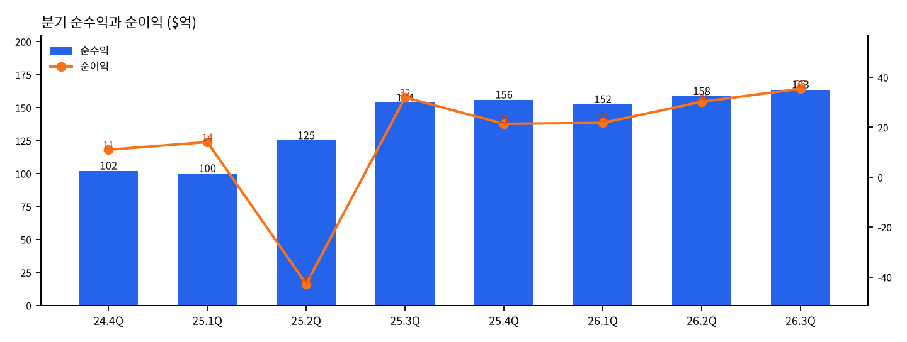
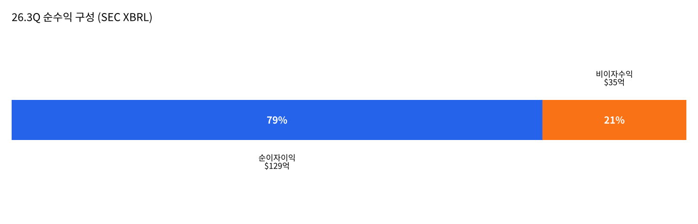
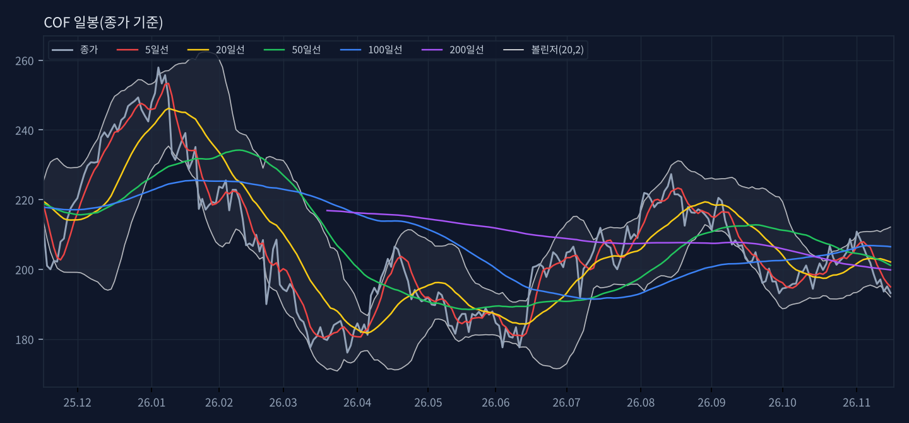
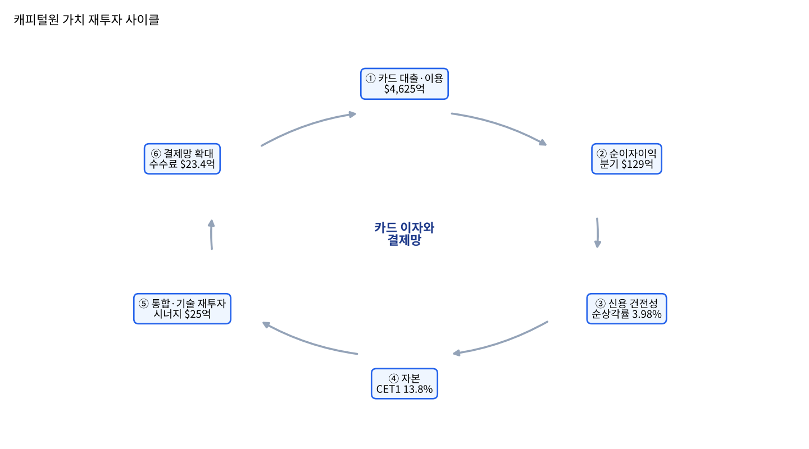

캐피털원은 미국 신용카드·자동차 대출·소비자 은행을 하는 금융회사다. 데이터로 고객 신용을 가려 높은 이자의 카드 대출을 키우는 것이 본업이고, 2025년 디스커버 파이낸셜을 인수해 자체 결제망(디스커버 네트워크)까지 가졌다. 대출 $4,625억, 예금 $4,807억 규모다.
| 항목 | 내용 |
|---|---|
| 종목 | Capital One Financial Corp. (COF) · NYSE · 본사 버지니아 매클린 |
| 밸류에이션 | PER 11.4배 · P/B 1.06배 (2026.11.16 종가 $193.22) |
| 최근 분기(26.3Q) | 순수익 $163억, 순이익 $35억, GAAP EPS $5.61, 조정 EPS $6.69 |
| 자본 | CET1 13.8%, 주당 장부가 $182.29, 효율비율 54.19%(조정 48.76%) |
| 사업 부문 | 국내 카드, 소비자 은행, 상업 은행, 디스커버 결제망 |
| 직책 | 인물 | 역할·특징 |
|---|---|---|
| 창업자·회장 겸 CEO | 리처드 페어뱅크 | 회사 창업자이자 CEO. 데이터 기반 대출 심사를 회사 문화로 만든 인물 |
| 통합 과제 | 디스커버 통합 팀 | 시너지 $25억 목표를 일정보다 앞당겨 달성 중. 브렉스 통합도 병행 |
경영 스타일: 데이터로 신용을 고르고 규모로 비용을 낮춘다. 카드 대출에서 손실이 나더라도 이자 수익이 더 크게 나도록 고객을 선별하는 방식이다. 인수 통합 비용을 조정 EPS에서 따로 빼서 보여 주는데, 3분기에는 인수 상각 $4.83억($0.60), 디스커버 통합 $3.38억($0.42), 브렉스 $0.47억($0.06)을 제외했다.
디스커버 인수로 결제 승인·정산 네트워크를 직접 보유해 수수료를 남에게 내지 않는 구조를 만들고 있다. 순할인·교환수수료 수익이 3분기 $23.4억이다.
카드 이용 → 이자 수익 → 자체 네트워크 수수료까지 한 회사 안에서 모은다. 브렉스 인수로 기업 카드·지출 관리 영역도 넓힌다.
다음 실적발표는 세 가지 질문에 답하는 자리다.
1. 국내 카드 신용지표가 더 좋아지나?
2. 디스커버 시너지와 통합 비용이 계획대로 가나?
3. 자본 환원이 이어지나?
한 줄 판정 규칙: 첫 번째 질문(연체율·순상각률)이 개선되면 가장 약한 고리인 신용 비용이 풀린다. 조정 EPS 격차는 두 번째 질문으로 확인한다.
일정: 다음 실적발표는 트레이딩뷰 추정 2027.01.26(회사 확정 일정은 확인 필요). 숫자 가이던스는 확인되지 않음.
| 분기 | 순수익 | 순이자이익 | 비이자수익 | 비이자비용 | 대손충당금 | 순이익 | EPS | 조정 EPS | 특이 사항 |
|---|---|---|---|---|---|---|---|---|---|
| 24.4Q | $102억* | $81억* | $21억* | $61억* | $26억* | $11억* | $2.67 | $3.09 | |
| 25.1Q | $100억 | $80억 | $20억 | $59억 | $24억 | $14억 | $3.45 | $4.06 | |
| 25.2Q | $125억 | $100억 | $25억 | $70억 | $114억 | $-43억 | -$8.58 | $5.48 | 디스커버 인수 반영, 충당금 급증으로 순손실 |
| 25.3Q | $154억 | $124억 | $30억 | $83억 | $27억 | $32억 | $4.83 | $5.95 | |
| 25.4Q | $156억* | $125억* | $31억* | $93억* | $41억* | $21억* | $3.26 | $3.86 | |
| 26.1Q | $152억 | $121억 | $31억 | $85억 | $41억 | $22억 | $3.34 | $4.42 | |
| 26.2Q | $158억 | $124억 | $35억 | $90억 | $30억 | $30억 | $4.73 | $5.81 | |
| 26.3Q | $163억 | $129억 | $35억 | $89억 | $29억 | $35억 | $5.61 | $6.69 | 충당금 환입 $22.5억, CET1 13.8% |
EPS는 희석 GAAP 주당순이익, 조정 EPS는 트레이딩뷰 Reported(비GAAP) 기준이다. *는 연간 − 1~3분기 합으로 구한 근사치다. 25.2Q는 디스커버 인수가 반영되기 시작한 분기라 8분기 비교 시 기저가 달라진다.

흐름 요약: 디스커버 인수 반영으로 순수익은 24.4Q $102억에서 26.3Q $163억으로 60% 늘었다. 25.2Q 충당금 $114억으로 순손실(-$42.8억)이 났고, 이후 충당금은 $27~41억대로 안정됐다. 최근 두 분기 순이익은 $30억 이상으로 회복했다.
| 구분 | 돈을 버는 방식 | 26.3Q | 비중 |
|---|---|---|---|
| 순이자이익 | 카드·자동차 대출 이자에서 예금 이자 등 조달비용을 뺀 금액 | $129억 | 79% |
| 비이자수익 | 순할인·교환수수료 $23.4억 등 수수료 | $35억 | 21% |

수익의 약 80%가 이자다. 순이자마진(NIM)이 8.41%로 일반 은행보다 높은 이유는 신용카드 대출 비중이 크기 때문이며, 대신 충당금(3분기 $29억)이 큰 구조다. 부문별 이익은 이 양식에서 확인되지 않아 생략했다.
캐피털원의 목표는 "카드 이자와 결제망을 한 회사에서 모두 가지는 것"이다.
| 축 | 내용 |
|---|---|
| 카드 대출 확대 | 높은 이자 수익의 원천. 신용 비용은 데이터로 관리 |
| 디스커버 통합 | 결제망 보유, 시너지 $25억 목표 앞당김 |
| 예금 중심 자금 조달 | 예금 $4,807억 > 대출 $4,625억 |
| 기술·인수 | 브렉스 인수로 기업 카드·지출 영역 확장 |
| 주주 환원 | 자사주 3분기 $26억 |

| 이동평균 | 값 | 종가 대비 | 위치 |
|---|---|---|---|
| 5일선 | $194.96 | -0.9% | 종가 아래 |
| 20일선 | $202.11 | -4.4% | 종가 아래 |
| 50일선 | $201.14 | -3.9% | 종가 아래 |
| 100일선 | $206.48 | -6.4% | 종가 아래 |
| 200일선 | $199.82 | -3.3% | 종가 아래 |
52주 고가 $259.6에서 내려왔고, 현재는 50·100·200일선 아래에 있다. 종가 $193.22는 55일 저가($189.8) 위 1.8%, 52주 저가($174.2)보다 11% 위다.
| 규칙 | 기준 | 현재 값 | 신호 |
|---|---|---|---|
| 장기 추세 필터 | 종가 vs 200일선 | $193.20 < $199.82 | 매도 |
| 중장기 교차 | 50일선 vs 200일선 | $201.14 > $199.82 | 매수 |
| 단기 교차 | 20일선 vs 50일선 | $202.11 > $201.14 | 매수 |
| 돈키언 채널 | 55일 고가 $221.10 / 저가 $189.80 | 중간값 $205.45 아래 | 매도 |
| 1개월 모멘텀 | 21거래일 수익률 | -4.2% (기준 $201.70) | 매도 |
| 3개월 모멘텀 | 63거래일 수익률 | -12.8% (기준 $221.50) | 매도 |
| 6개월 모멘텀 | 126거래일 수익률 | +3.2% (기준 $187.20) | 매수 |
| 12개월 모멘텀 | 252거래일 수익률 | -10.9% (기준 $216.80) | 매도 |
| 종합 (8개 평균) | -0.25 | 매도 우위 |
해석: 매수 신호 3개(중장기 교차, 단기 교차, 6개월 모멘텀), 매도 신호 5개(장기 추세 필터, 돈키언 채널, 1개월 모멘텀, 3개월 모멘텀, 12개월 모멘텀). 합계 -0.25로 약한 매도 우위다. 14일 ATR $6.71 (3.5%), 52주 고가 $259.60 · 저가 $174.20.
| 가격 | 기준 | 무엇이 바뀌나 |
|---|---|---|
| $221.50 | 3개월 모멘텀 기준가 | 종가가 이 가격 위면 3개월 신호 매수 |
| $221.10 | 55일 고가 | 돌파 시 채널 상단 갱신 |
| $216.80 | 12개월 모멘텀 기준가 | 종가가 이 가격 위면 12개월 신호 매수 |
| $205.45 | 돈키언 중간값 | 55일 채널 중간값 위/아래로 신호가 바뀜 |
| $201.70 | 1개월 모멘텀 기준가 | 종가가 이 가격 위면 1개월 신호 매수 |
| $199.82 | 200일선 | 종가가 이 선 위/아래인지로 장기 추세 신호가 바뀜 |
| $189.80 | 55일 저가 | 이탈 시 채널 하단 갱신 |
| $187.20 | 6개월 모멘텀 기준가 | 종가가 이 가격 위면 6개월 신호 매수 |
가격 수준은 신호가 바뀌는 기준선일 뿐 진입·청산 가격 제안이 아니다. 20일/50일 교차는 이동평균 자체가 움직여 단일 가격으로 표시하지 않았다. 일봉·주봉은 종가 기준 직접 계산(고저 데이터 미사용)이다.
| 악재 요인 | 내용 | 강도 |
|---|---|---|
| 신용 사이클 | 국내 카드 순상각률 3.98%, 연체율 3.74%. 악화되면 충당금이 급증(25.2Q $114억) | 높음 |
| 인수 통합 비용 | 디스커버·브렉스 통합과 인수 상각으로 GAAP과 조정 EPS가 주당 $1.08 벌어짐 | 중간 |
| 충당금 환입 의존 | 3분기 환입 $22.5억이 이익에 기여 | 중간 |
| 규제·카드 수수료 | 카드 이자·수수료 관련 규제 변화 가능성(구체 수치는 확인 필요) | 참고 |
| 티커 | 회사 | PER(TTM) | PEG | P/S | EPS 성장(YoY) |
|---|---|---|---|---|---|
| COF | 캐피털원 | 11.4배 | 0.02 | 1.89배 | +618% |
| AXP | 아메리칸 익스프레스 | 18.0배 | 0.94 | 2.50배 | +19% |
| SYF | 신크로니 | 7.5배 | 1.63 | 1.23배 | +5% |
| ALLY | 앨라이 | 8.7배 | 0.05 | 1.20배 | +163% |
| BFH | 브레드 파이낸셜 | 7.7배 | 0.27 | 0.97배 | +29% |
비교 결론: PER 11.4배는 AXP(18.0배)보다 낮고 SYF(7.5배)·ALLY·BFH(7.7배)보다 높다. 트레이딩뷰 PEG 0.02(EPS 성장 +618%)는 디스커버 인수 전 순손실 기저 때문에 의미가 없다. 동종 카드·소비자 금융 중 SYF는 PEG 1.63으로 비싼 쪽이다.
COF는 적자 기업이 아니다(최근 4분기 순이익 $109억). 은행의 생존력은 자본비율과 예금 구조로 본다.
| 지표 | 값 | 의미 |
|---|---|---|
| 보통주자본비율(CET1) | 13.8% | 손실 흡수력 |
| 대출 / 예금 | $4,625억 / $4,807억 | 예금이 대출보다 많음 |
| 효율비율 | 54.19% (조정 48.76%) | 낮을수록 비용 효율 높음 |
| 주당 장부가 · P/B | $182.29 · 1.06배 | $193.22 ÷ $182.29 |
| ROE (트레이딩뷰) | 9.3% | 디스커버 인수 효과 반영 중 |
| 기준 | 매출 | P/S | 비고 |
|---|---|---|---|
| 트레이딩뷰 | – | 1.89배 | 순수익 기준 |
| 카드·소비자금융 피어(AXP·SYF·ALLY·BFH) | – | 약 1.48배 | 2.50 / 1.23 / 1.20 / 0.97 |
해석: COF는 P/B 1.06배, P/S 1.89배로 AXP(2.50배)보다 싸고 SYF·ALLY·BFH보다 비싸다. ROE 9.3%가 높아지면(통합 효과) P/B가 올라갈 여지가 생기고, 신용 비용이 오르면 반대다.
은행은 EBITDA 대신 충당금 전 영업이익(PPNR)을 쓴다. 순수익에서 비이자비용을 뺀 값이다.
| 지표 | 값 | 산출 |
|---|---|---|
| 순이익 (TTM) | $109억 | 25.4Q~26.3Q 합 |
| 순수익 (TTM) | $630억 | SEC 합계 |
| 비이자비용 (TTM) | $357억 | SEC 합계 |
| 대손충당금 (TTM) | $141억 | SEC 합계 |
| PPNR (TTM) | 약 $273억 — 흑자 | 순수익 − 비이자비용(내 계산) |
| 방식 | PER | EPS 성장률 | PEG | 판정 |
|---|---|---|---|---|
| 조정 EPS 기준 (TTM $20.78, 직전 $18.58) | 9.3배 | +11.8% | 0.79 | 투자 적격 |
| 트레이딩뷰 (GAAP TTM) | 11.4배 | +618% | 0.02 | 기저 효과, 판정 제외 |
판정: 조정 EPS 기준 PEG 0.79 → 투자 적격. GAAP TTM EPS 성장률 +618%는 25.2Q 순손실(-$8.58) 기저 때문이다. 트레이딩뷰 Reported(조정) EPS로 계산하면 TTM $20.78이 직전 4분기 $18.58보다 11.8% 늘어, PER 9.3배 ÷ 11.8 = 0.79다.

COF의 사이클은 카드 대출 → 이자 → 건전성 → 자본 → 재투자로 돈다.
| 고리 | 현재 숫자 | 고리 강도 | 약해지는 신호 |
|---|---|---|---|
| ① 카드 대출·이용 | 대출 $4,625억 | 강함 | 대출 증가 둔화 |
| ② 순이자이익 | 분기 $129억, NIM 8.41% | 강함 | 금리·예금 비용 상승 |
| ③ 신용 건전성 | 순상각률 3.98%, 연체율 3.74% | 주의 | 연체율 상승, 환입 감소 |
| ④ 자본 | CET1 13.8% | 강함 | CET1 하락 |
| ⑤ 통합·기술 재투자 | 시너지 $25억, 브렉스 | 진행 중 | 통합비용 지속 |
| ⑥ 결제망 확대 | 순할인·교환수수료 $23.4억 | 진행 중 | 네트워크 이용 정체 |
사이클의 특징: 약한 고리는 ③ 신용 건전성이다. 같은 구조가 호황에는 빠르게 돌고, 연체가 오르는 국면에서는 충당금이 먼저 늘어난다.